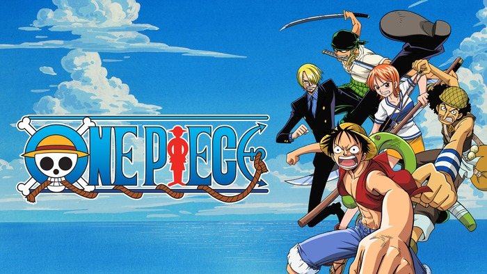
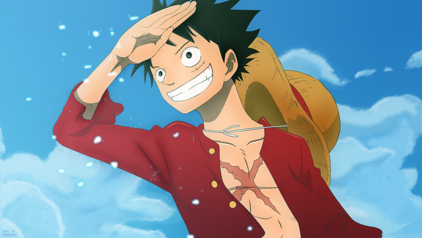
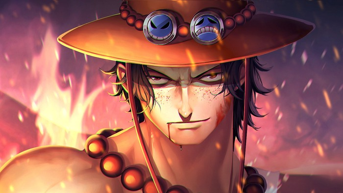
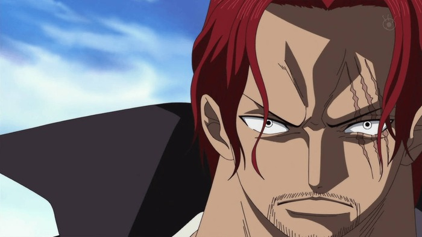
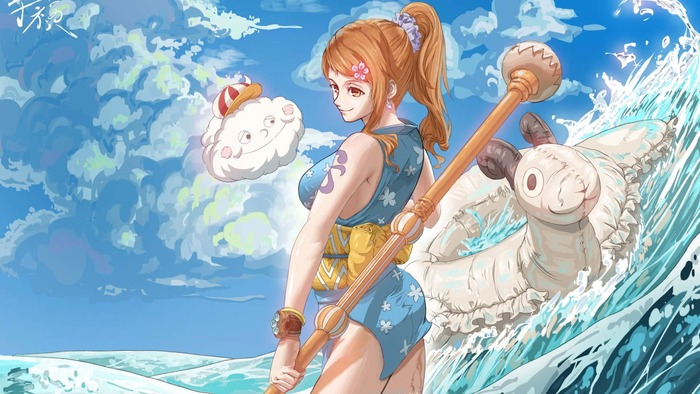
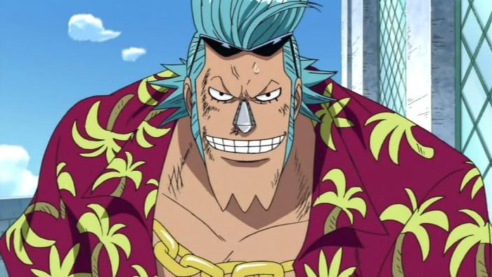

1. Como tudo começa:
A história começa com a execução de Gol D. Roger, o Rei dos Piratas. Antes de morrer, ele revela a existência do seu tesouro lendário, o One Piece, escondido na Grand Line. Isso dá início à Grande Era dos Piratas. Anos depois, Monkey D. Luffy parte numa jornada para encontrar o tesouro e tornar-se o novo Rei dos Piratas. A saga que marca o começo de One Piece tem início nos mostrando como o protagonista Monkey D. Luffy acidentalmente consumiu a a fruta Akuma no Mi e ganhou suas habilidades de borracha ainda criança. Embora a fruta também tenha causado a perda de sua capacidade de nadar, ele não deixou que isso afetasse seu sonho de encontrar o tesouro One Piece e se tornar o Rei dos Piratas.
2. Onde Acontece
O anime One Piece passa-se num mundo fictício dominado por vastos oceanos, repleto de ilhas exóticas, reinos misteriosos e perigos marítimos. A história acompanha as aventuras de Monkey D. Luffy e da sua tripulação, os Piratas do Chapéu de Palha, enquanto viajam para encontrar o tesouro lendário com o mesmo nome e alcançar o título de Rei dos Piratas. Os eventos decorrem num planeta sem continentes massivos, onde a navegação é o foco principal. O cenário principal divide-se em várias localizações chave:
- Oceanos Globais:
- O mundo é dividido por uma enorme faixa de terra e montanhas chamada Red Line, e por um oceano perpendicular chamado Grand Line.
- East Blue:
- O oceano onde Luffy nasceu e iniciou a sua jornada. É considerado uma das áreas mais pacíficas do mundo.
- Grand Line:
- O trajeto principal onde se desenrola a maior parte da história. É um oceano extremamente perigoso com climas caóticos, onde a navegação exige o uso de bússolas especiais chamadas Log Poses.
- O Novo Mundo:
- A segunda metade da Grand Line, dominada pelos piratas mais fortes e pelo Governo Mundial.
- Ilhas Temáticas:
- Ao longo da viagem, a tripulação visita ilhas com culturas, climas e paisagens únicas (como desertos, ilhas de inverno ou cidades inspiradas em locais reais, como a cidade de Dressrosa, inspirada em Espanha).
3. Personagens
Monkey D. Luffy

"Luffy do Chapéu de Palha", como ficou conhecido, é o protagonista do anime, e o fundador e capitão da tripulação Piratas do Chapéu de Palha. Desde muito jovem, tem como seu maior sonho um dia se tornar encontrar o lendário tesouro de Gol D. Roger, para se tornar o novo Rei dos Piratas.
Portgas D. Ace

Filho do falecido Rei dos Piratas, Gol D. Roger, Ace foi adotado por Monkey D. Garp antes mesmo de nascer, a pedido de seu próprio pai biológico. Garp recebeu o menino como seu próprio neto e o criou como um irmão para Luffy e Sabo. Mais inteligente, educado e "suportável" que Luffy, Ace tem como uma de suas características em comum com seu irmão mais novo a imprudência em suas ações como pirata.
Monkey D. Garp

Pai de Monkey D. Dragon, avô de Monkey D. Luffy e avô adotivo de Portgas D. Ace, Monkey D. Garp não construiu a mesma carreira que sua família seguiu posteriormente. Pelo contrário! Garp é um Vice-Almirante da Marinha, e foi um dos principais oponentes de ninguém menos que Gol D. Roger, o Rei dos Piratas e detentor original do cobiçado tesouro One Piece.
Shanks

Conhecido como Shank, o Ruivo, este pirata foi a inspiração inicial de Luffy para seguir na pirataria. Ele começou sua trajetória como um Pirata Aprendiz na tripulação lendária Piratas do Roger, único grupo a conquistar a Grand Line, sob a liderança de Gol D. Roger, o Rei dos Piratas e o detentor do tesouro One Piece. Após a morte de Roger, Shanks se tornou o Capitão de sua própria tripulação, os Piratas do Ruivo, sendo considerado um dos Yonkou, os cinco capitães piratas mais poderosos da atualidade.
Roronoa Zoro

Primeiro pirata (segundo membro se contarmos com Luffy) a se juntar à tripulação de Piratas do Chapéu de Palha, Zoro aceitou o convite de Luffy após o capitão salvar sua vida. Atualmente, já figura como um dos quatro maiores guerreiros do grupo e, assim como Luffy, integra a chamada Pior Geração, formada pelos piratas com recompensa acima de $100.000.000. A recompensa de Zoro é $1.111.000.000.
Nami

Após as difíceis experiências pelas quais passou em sua infância e juventude, na esperança de um dia conseguir comprar de volta sua aldeia dos Piratas de Arlong, Nami desenvolveu grande força e agilidade. Não tem as mesmas habilidades de luta de seus companheiros, mas é capaz de se defender, seja no combate corpo a corpo, seja usando um bastão, com o qual já demonstrou grande habilidade.
Tony Tony Chopper

Esta pequena rena ganhou a habilidade de se mudar sua forma e de pensar como humanos após comer a fruta Hito Hito no Mi. Por ser confundido com um mascote, sua recompensa é de apenas $1000. Contudo, Chopper é um valioso membro da tripulação dos Piratas do Chapéu de Palha, atuando como médico da tropa.
Nico Robin

Por ser a única sobrevivente da ilha de Ohara, Robin é a única pessoa no mundo com habilidades para ler Poneglyphs, algo considerado ameaçador pelo Governo Mundial, que proíbe a prática. Conhecida também como "Criança Demônio" e "Luz da Revolução", a pirata foi apresentada ao público como um dos antagonistas da Saga Alabasta, mas acaba se tornando a sétima integrante da tripulação de Luffy.
Franky

Oitavo pirata a integrar a tripulação dos Chapéus de Palha, este cyborg também foi apresentado aos espectadores como um antagonista, durante o Arco Water 7. Líder da Família Franky, que trabalhava com desmantelamento de navios, Franky tinha o sonho de um dia criar e dirigir um navio com o qual conseguisse dar a volta ao mundo.
4. Autor
Eiichiro Oda
Eiichiro Oda é o criador de One Piece, uma das obras mais populares e influentes da história dos mangás e animes. Nascido em 1º de janeiro de 1975, na cidade de Kumamoto, no Japão, Oda demonstrou interesse por desenho desde a infância e iniciou sua carreira ainda jovem. Em 1997, publicou **One Piece** na revista *Weekly Shōnen Jump*, da editora **Shueisha**, dando início à história de Monkey D. Luffy e sua busca pelo lendário tesouro One Piece. Graças à sua criatividade, construção de mundo detalhada e personagens marcantes, a obra conquistou milhões de fãs ao redor do mundo e tornou-se um dos mangás mais vendidos de todos os tempos.